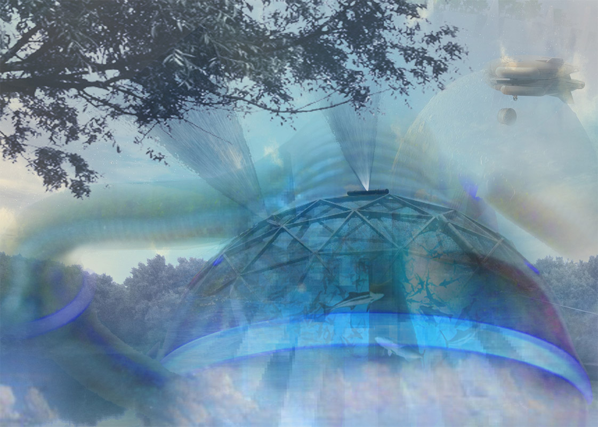
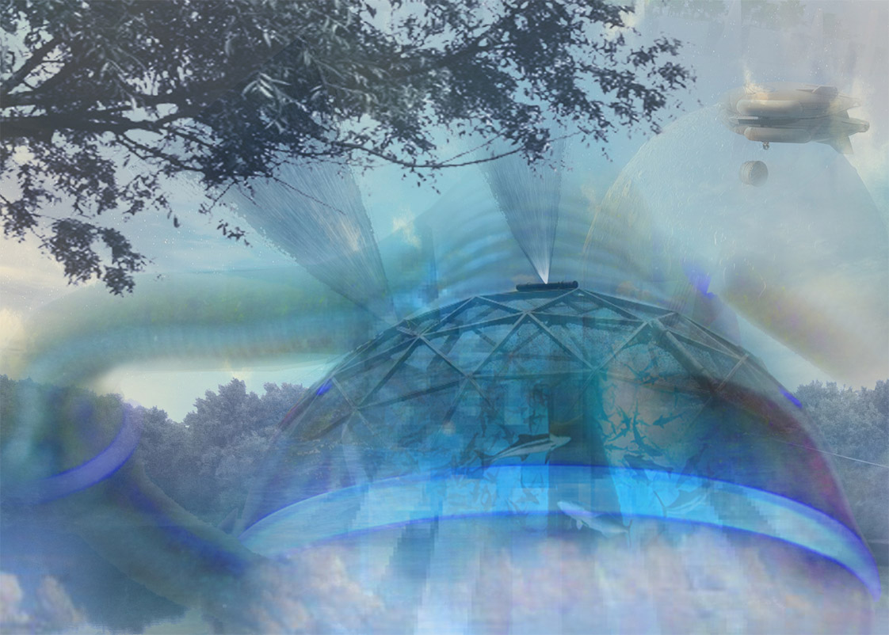

NARRATIVE
This is a project which lasts for one semester in design studio. The goal is to portray Wabash River as the stateline in an unconventional way. By going through the process of SURVEY, INDEX, TIMELINE, NARRATIVE and FUTURE- altogether five phases, students are supposed to have a thorough understanding of Wabash River and the regions nearby.
All graphic drawings are based on sound study and research. The skill of visualizing information has been improved significantly. And the drawings include: informational map, collage of the main elements; timeline of the sequences of events and objects; three most important parts of that region with multiple eras merged together and storyboard of imagination about the future.